Watching, listening and reading with OnScreen on the web, your TV and your phone
This guide is for the people who watch and listen. It covers signing in, finding things, the players, music, audiobooks, books, photos, live TV, downloads and your account, plus notes for each app.
Setting up the server, adding libraries and managing users is covered in the separate OnScreen Install & Administration Guide. When something in this guide depends on a server setting, it says ask your server's admin.
OnScreen is a media server. One computer keeps your household's movies, TV shows, anime, music, audiobooks, podcasts, books, comics and photos, and you watch, listen and read on your own devices.
The person who runs the server, your admin, decides which libraries you can open and can set limits on your account (for example a content-rating limit or how many streams you can play at once). Everything else in this guide you can do yourself.
Your progress follows you. Start a film on the TV, finish it on your laptop: every app reads the same watch history, resume points, favorites and ratings from the server.
All the apps talk to the same server. You need your server's address (for example
https://media.example.com or 192.168.1.10:7070) and an account. Your admin gives you both.
| App | Runs on | How to get it |
|---|---|---|
| Web app | Any up-to-date browser on a computer, tablet or phone | Open your server's address in the browser. Nothing to install. |
| Fire TV | Amazon Fire TV sticks and boxes | The Amazon Appstore. |
| Android TV / Google TV | TVs and streaming boxes running Android TV or Google TV | Being tested on Google Play; not yet public. Ask your admin. |
| Android phone | Android 7.0 or later | Being tested on Google Play; not yet public. Ask your admin. |
| Samsung TV (Tizen) | Samsung smart TVs from 2020 on | Submitted to Samsung's store and waiting for review. Ask your admin. |
| LG TV (webOS) | LG 4K (UHD) TVs with webOS 6 or later | Submitted to the LG Content Store and waiting for review. Ask your admin. |
| Xbox | Xbox consoles | Not in the Microsoft Store yet. Ask your admin. |
| Roku | Roku devices | Not in the Roku store. Ask your admin. |
| Desktop | Windows and Linux | Installers are published with each OnScreen release. Ask your admin. |
Store availability is as of October 2026. The desktop app shows the web app in its own window and adds a high-quality music engine (see 4.5).
Depending on how your server is set up, you might also see:
If your admin sent you an invite link, open it to reach Set Up Your Account. Choose a username and a password of at least 8 characters, click Create Account, then Sign In.
Typing a password with a remote is slow, so most TV apps let you sign in from your phone or computer instead. This is called pairing.
/pair and a 6-digit code.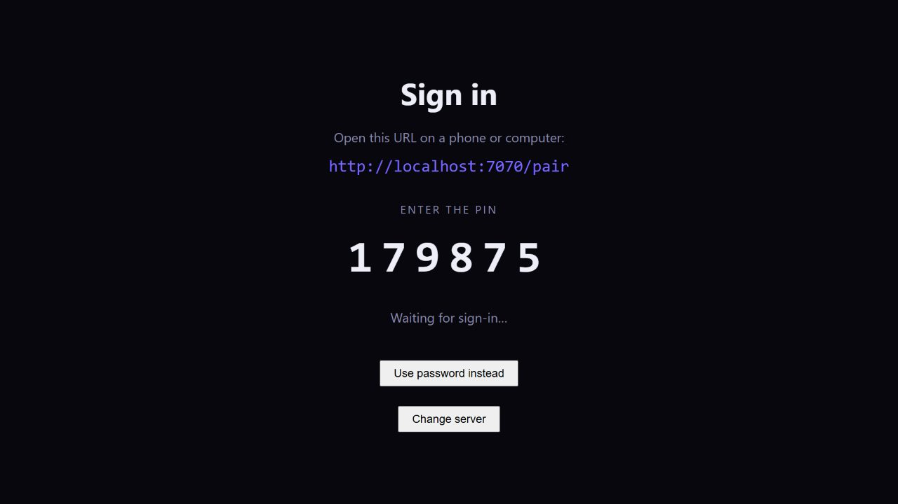
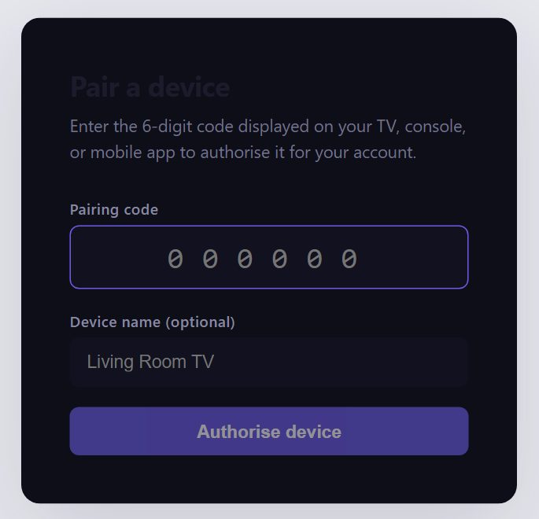
Only enter a code that is showing on a device you own. Whoever started that code gets access to your account, which is why the page warns you before you click Authorise device.
If your server uses single sign-on, pairing is how you sign in on a TV: you sign in on the web page with your organisation's account, and the TV follows. To type a username and password on the TV instead, choose Use password instead (LG, Samsung, Xbox, Roku) or simply stay on the Sign In screen (Android TV and Fire TV).
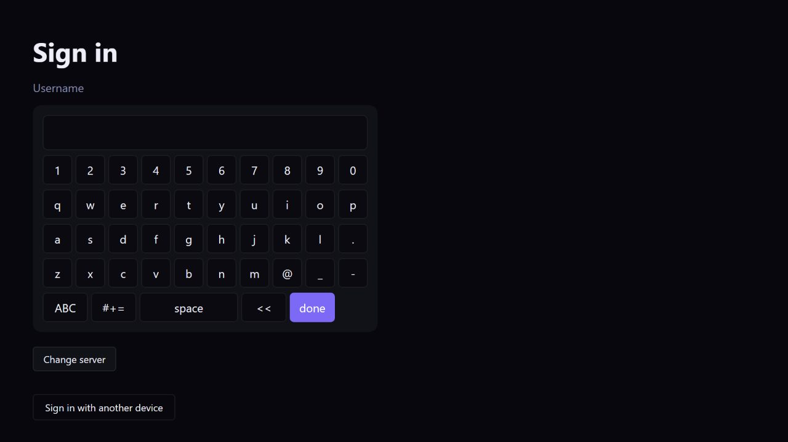
http:// or https://. Tap Continue./pair page from a computer, as in 1.4.A household can share one account and still keep things apart with managed profiles. Each profile has its own watch history and progress, and can have its own 4-digit PIN and content-rating limit. Profiles are created by your server's admin.
| App | Where |
|---|---|
| Web | Sign out at the bottom of the sidebar. |
| LG, Samsung, Xbox | Settings ▸ Sign out (keeps the server address) or Forget server (start over with a new address). |
| Android TV, Fire TV | Settings ▸ Account ▸ Log out or Change server. |
| Android phone | ⋮ ▸ Settings ▸ Account ▸ Sign out or Forget server. Both also remove the downloads saved on the phone. |
| Roku | There is no sign-out on Roku. Sign the Roku out from another device's Signed-in devices list. |
You can sign any device out remotely from Account ▸ Signed-in devices in the web app (see 9.3).
The sidebar on the left is the web app's main menu.
| Item | What it opens |
|---|---|
| Home | Your rows of things to watch and the list of libraries (2.2). |
| Search | Search across everything you can open (2.5). |
| Collections | Collections, your playlists, film series and genres (2.6). |
| History | Everything you've played, newest first (2.8). |
| My stats | Your own viewing and listening numbers and Year in review (9.5). |
| Requests | Things you've asked the admin to add. Only shown when your server takes requests and your account may make them (2.9). |
| Favorites | Titles you've marked with the heart. |
| Live TV | The TV guide. Only shown when your server has a TV tuner (chapter 7). |
| Audio | ReplayGain loudness settings for music in this browser (4.5). |
| Account | Your account settings (chapter 9). |
At the bottom of the sidebar are the notification bell, a Dark mode / Light mode switch, your name (which opens Switch User) and Sign out. Admins see a few more items, such as Settings; this guide doesn't cover them.
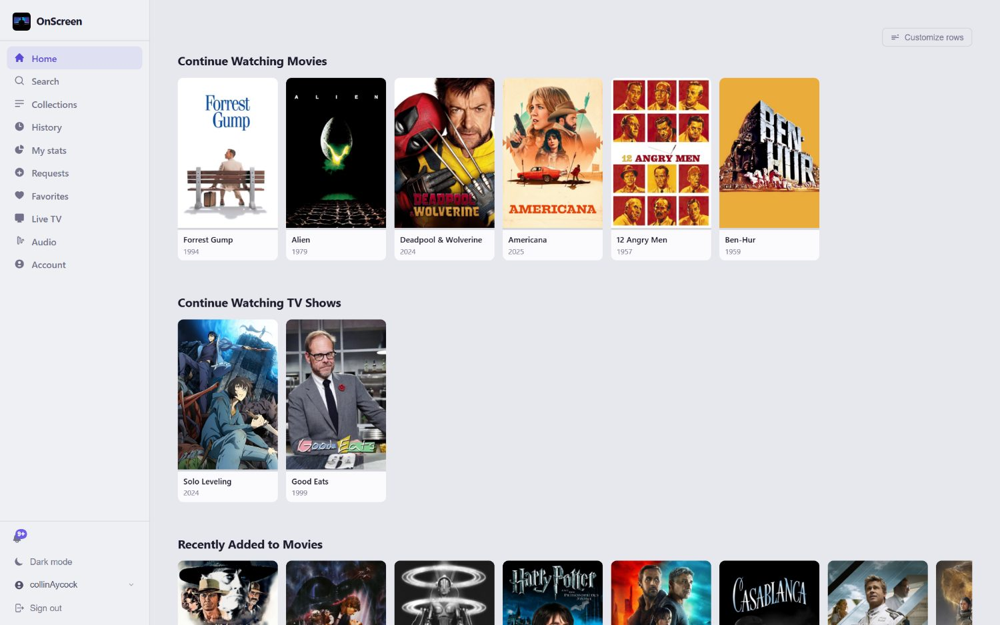
Home shows rows of titles. A row only appears when it has something in it.
| Row | What's in it |
|---|---|
| Continue Watching TV Shows | Shows you're part-way through, one tile per show, with a progress bar. |
| Next Up | The next unwatched episode of each show you're watching, such as "S2 · E5 — Title". |
| Continue Watching Movies | Movies you've started. |
| Continue Watching | Anything else you've started, such as home videos. |
| Memories | Photos taken on this day in earlier years (only if you can open a photo library; see 6.6). |
| Plan to Watch | Titles you've set to Plan to Watch (2.8), until you've watched them. |
| Collection rows | Collections your admin has chosen to show on everyone's Home screen. |
| Trending this week | What's being watched most on the server. |
| Recently Added to library | The newest titles in each library. Click the row's title to open the library sorted newest first. |
| Libraries | A tile for each library you can open. This is how you get into a library. |
Point at the tile and click the × that appears (Remove from Continue Watching). The title leaves the Continue Watching rows and Next Up until you watch it again. On a TV app, hold OK on the tile (the row says Hold OK for options); on the phone, press and hold the card.
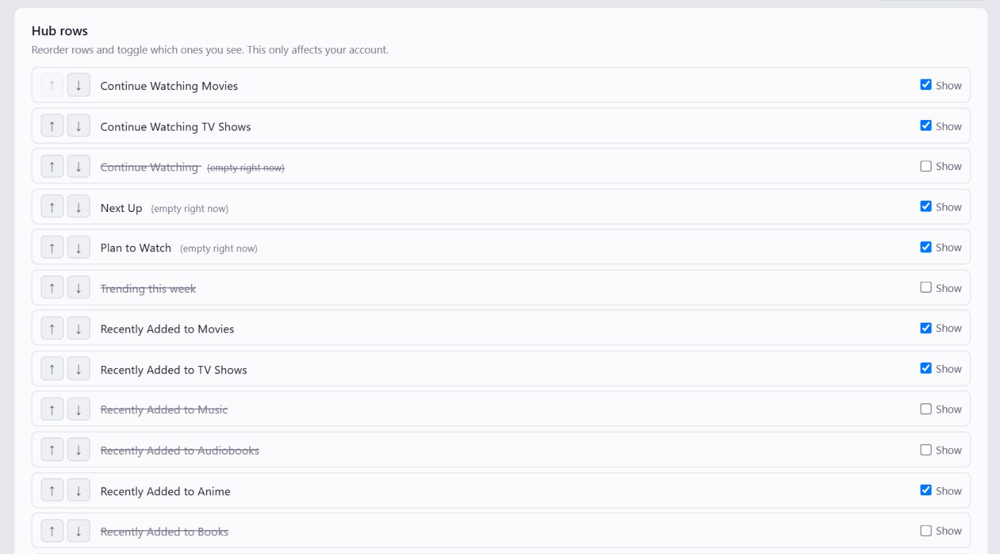
Your layout is saved to your account, so the Android TV, Fire TV, phone, LG, Samsung and Xbox apps use the same order. It only affects you.
Open a library from the Libraries row on Home.
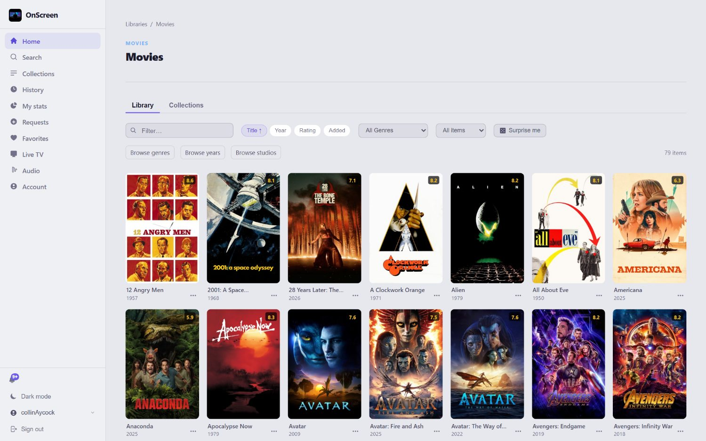
On each tile:
The TV apps offer the same sorting and filters: Sort (Title A–Z / Z–A, Recently added, Newest year, Oldest year, Highest rated), Genre, the watch filter and Surprise me.
Clicking a movie or show opens its page. (Clicking an episode starts it straight away.)
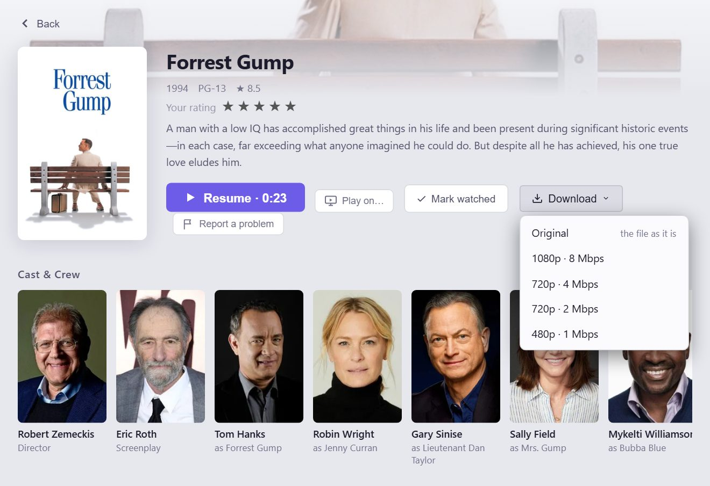
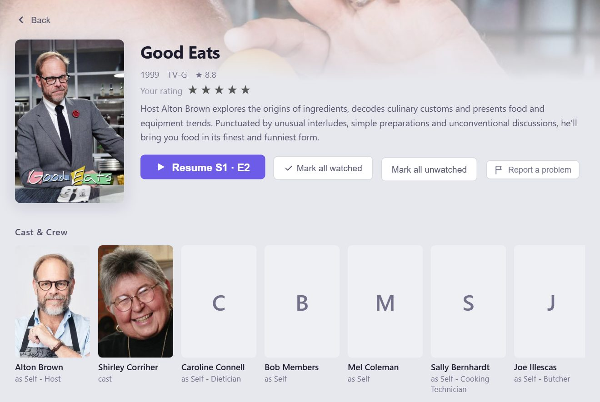
Click Search in the sidebar and start typing.
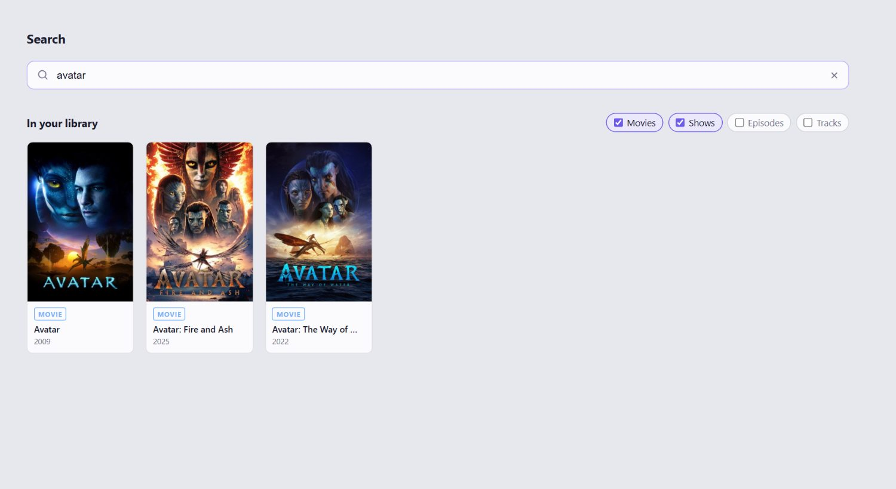
On the LG, Samsung and Xbox apps, Search has an on-screen keyboard and a Search in: choice of library. The Android TV and Google TV app also has voice search when the device supports it.
The Collections page groups things in four sections:
In the web app, click the heart at the top right of the player (Add to favorites). On the TV apps press ♥ Favorite (LG, Samsung, Xbox) or the heart (Android TV, Fire TV) on the title's page; on the phone, tap the heart on the title's page. Everything you've favorited is on the Favorites page.
Movie and show pages have a Status list: Plan to Watch, Watching, On Hold, Completed or Dropped (— None — clears it). Titles set to Plan to Watch appear in the Plan to Watch row on Home. The phone app has the same choice as Watching status.
OnScreen marks a title watched when you finish it. To change it yourself, use Mark watched / Mark unwatched on the title page, a tile's ⋯ menu, or the check mark at the top of the player. Shows and seasons have Mark all watched / Mark all unwatched. Marking something unwatched also clears its resume point.
History (Watch History) lists what you've played, with the app you used, how long and when. Entries can't be deleted.
If your server takes requests, you can ask your admin to get a movie or show. This works in the web app (and as Discover on the LG, Samsung and Xbox apps). The Android apps don't take requests.
Your account may have a limit, shown as for example "2 movie requests left this week". Over the limit, a request still goes in but needs the admin's approval. If your server is connected to download tools, the Upcoming tab shows a calendar of expected releases.
The bell at the bottom of the sidebar shows a count of unread notifications. Click it to see them; click one to open it, or Mark all read. You're told when:
To start a movie from the beginning in the web app, use the Chapters strip, drag the seek bar back, or mark the movie unwatched. On the Android TV, Fire TV, LG, Samsung and Xbox apps the title page has Play from Beginning.
Your position is saved as you watch, on every app. If you watch on another device while the web player is paused, the position and the Resume button update to match.
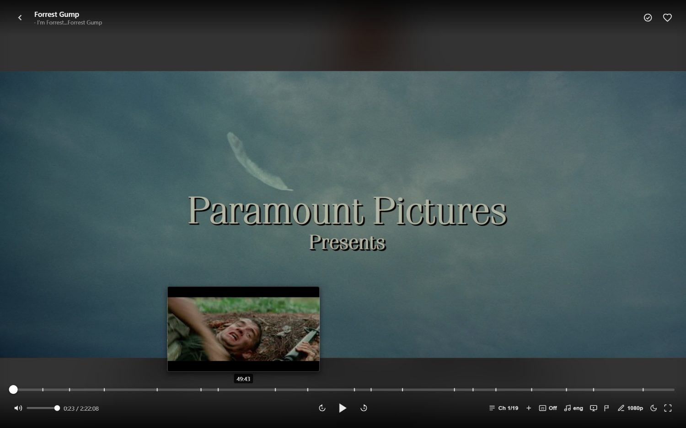
Move the mouse to show the controls; they hide again after a few seconds. Click the picture to pause or play.
Back (to the show page for an episode), the title (and episode number and chapter), a check mark (Mark watched) and a heart (Add to favorites).
| Control | What it does |
|---|---|
| Seek bar | Drag or click to jump. Ticks mark chapters; pointing at it shows a preview picture when the server has made them. |
| Volume and time | Mute, volume slider, and the time played / total. |
| ⏮ −10s ▶ +10s ⏭ | Previous episode, back 10 seconds, play/pause, forward 10 seconds, next episode. Movies have only the middle three. |
| Ch 1/19 | The chapter menu, with pictures when available. Only shown when the file has chapters. |
| + | Add to playlist. |
| Subtitles | Shows the subtitle language, or Off (3.5). |
| Audio track | Only when there's more than one (3.4). |
| Play on another device | See 3.9. |
| Report a problem | The flag icon (3.12). |
| Cast to TV | Chromecast, in Chrome and Edge, when the file can be cast (3.9). |
| Version | Only when the title has more than one version (3.3). |
| Quality | See 3.8. |
| Sleep timer | The moon icon (3.10). |
| Fullscreen | Fill the screen. |
| Key | Action |
|---|---|
| Space or K | Play / pause |
| ← → | Back / forward 10 seconds |
| ↑ ↓ | Volume up / down |
| F | Fullscreen on / off |
| M | Mute on / off |
| S | Skip the intro, credits or ad that's playing |
| Esc | Close the Quality, Version, Subtitles, Audio or Sleep timer menu |
The TV apps work with the remote's arrows and OK. Their buttons are listed in chapter 10.
A title can have more than one version, for example a Director's Cut and the theatrical cut, or a 4K and a 1080p copy. When it does:
Versions are named after the edition (such as "Director's Cut") or described, such as "4K · HDR10 · HEVC · MKV". A version marked DAMAGED (or "⚠ file may be damaged" on the page) failed the server's file check and may not play properly.
Multi-part movies (a film stored as two or more files, such as CD1 and CD2) play as one movie on every app, with one seek bar and one running time. The version menu shows them as "· 2 parts". They can't be cast.
Multi-episode files (one file holding two episodes) show as "E1–E2" or "S1 · E1–E2", count as both episodes, and are followed by the next episode after the range (E3).
When a file has more than one audio track (another language, or a commentary), the web player shows an Audio track button. Each track is listed by its name and language, with the channel count. OnScreen picks your preferred audio language automatically if one is set (9.6).
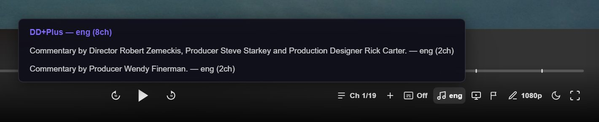
Switching to a track that isn't the file's default may restart the stream for a moment while the server prepares it. On the TV apps open Audio from the player's button row (press ↓) or press the yellow button (LG, Samsung) or Y (Xbox).
Click the Subtitles button. The list starts with Off, then the file's tracks (marked forced or SDH where that applies), then subtitles downloaded for the title (marked · online). If you've set a preferred subtitle language, OnScreen picks it for you.
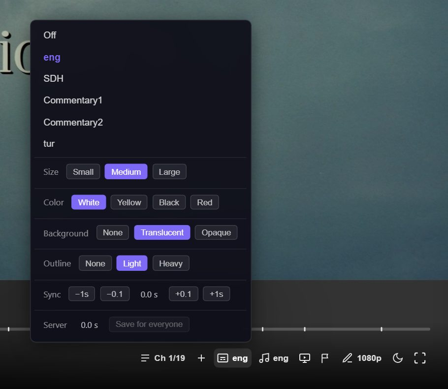
With a text subtitle chosen, the menu adds Size (Small, Medium, Large), Color (White, Yellow, Black, Red), Background (None, Translucent, Opaque) and Outline (None, Light, Heavy). These are remembered in that browser. The phone app has the same choices under Subtitle style.
Use the Sync row: −1s and −0.1 show subtitles earlier, +0.1 and +1s later, and Reset puts them back. This lasts for the current viewing only. If a file is always out of step, use Report a problem ▸ Subtitles problem: an admin can fix the timing on the server, and the fix then applies in every app.
If your server is connected to OpenSubtitles, the menu has Search online…. Choose a language, click Search, and pick a result; it downloads and is turned on. The Android TV and Google TV app (Find more online…), the phone app and the LG, Samsung and Xbox apps have the same search. Fire TV and Roku don't.
Subtitles copied from Blu-rays and DVDs (PGS and VobSub) are pictures, not text, so a player can't simply draw them over the video. In v2.6, when the server is preparing the stream for you (rather than sending the file as it is), these tracks appear in the Subtitles menu like any other, in one of two ways:
Choose Off (or a text track) to remove burned-in subtitles; the video restarts without them. Switching audio track or quality keeps the burned-in subtitles on. If a track can't be burned in (for example on a multi-part movie), a message says so and your video carries on.
This works on the web, Android TV, Fire TV, phone, LG, Samsung, Xbox and Roku apps. On Roku, picture-based subtitles are always burned in.
In the web player the menu may also offer Convert … to text (OCR), which turns a picture-based track into text so it can be styled and synced. It takes a few minutes; the text track is turned on when it's ready. If OCR isn't installed on the server, it says so.
When an episode's intro or end credits are marked on the server, a button appears while they play: Skip Intro → or Skip Credits →. Click it, or press S.
Near the end of an episode, an Up Next card shows the next episode.
| App | What happens |
|---|---|
| Web | Appears in the last minute. Up Next · 10s counts down, then plays the next episode. Play → goes now; Cancel stops the countdown. Only within the same season. |
| LG, Samsung, Xbox | Appears 25 seconds before the end with a 10-second countdown: ▶ Play now or Cancel. Pausing holds the countdown. |
| Android TV, Fire TV | Appears about 25 seconds before the end with a 10-second countdown: Play Now or Cancel. |
| Phone | Appears in the last 25 seconds with Play now and Dismiss; no countdown. |
| Roku | Appears 25 seconds before the end; OK plays now, and the next episode starts when this one ends. |
Music tracks and audiobook chapters simply follow on, with no card.
When your device can play a file exactly as it is stored, OnScreen sends it unchanged. This is called direct play and gives the best picture. When it can't (an unusual format, a slow connection, or a limit on your account), the server converts the video as you watch.
The Quality button offers Auto (Direct Play), 4K (2160p), 1080p, 720p, 480p and 360p. Choices higher than the file itself are left out, and Auto (Direct Play) is left out when the file can't be played as it is. Pick a lower setting if playback keeps pausing to load.
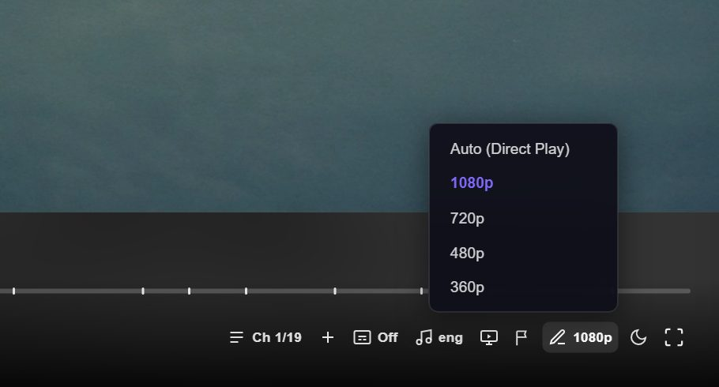
To set limits for every device at once, use Account ▸ Playback quality in the web app, or Settings ▸ Playback quality in the Android TV, Fire TV, phone, LG, Samsung and Xbox apps. Details are in 9.2. The TV apps have no quality menu in the player; this setting is how you choose quality there.
Your admin can also set a bitrate limit for watching from outside your home network. Anything above it is converted too, so playback away from home may look softer than at home.
Send what you're watching in the web app to one of your other devices, such as your TV:
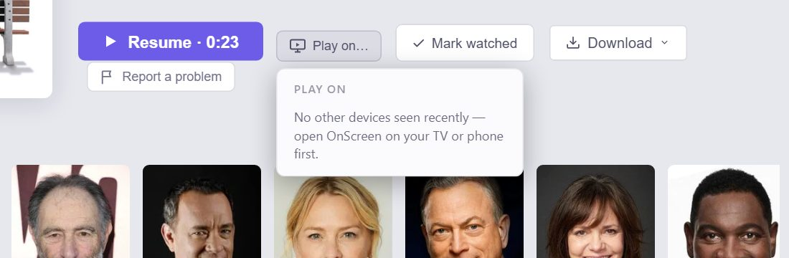
The list shows your own devices that have played something in the last 30 days. The LG, Samsung, Xbox, Android TV and Fire TV apps can receive. The phone and Roku can't.
Casting sends the original file, so a video above your playback quality limit can't be cast. Multi-part movies can't be cast either.
The moon icon in the web player stops playback after 15 minutes, 30 minutes, 45 minutes, 1 hour or at the End of episode. Off cancels it. The music player has the same timer, with End of track (or End of chapter for audiobooks). The phone app has a sleep timer too.
| Message | What it means and what to do |
|---|---|
| Too many streams | Your account may only play a set number of streams at once, and that many are already playing on other devices. Stop one, then try again. The limit is set by your admin; since v2.6 it counts every stream, not only converted ones. |
| Watch limit reached | Your account has viewing hours or a daily time limit. Try again in the allowed hours or tomorrow. |
| Playback stopped | The admin stopped your stream, sometimes with a reason. |
| This file appears to be damaged | The server's file check found broken parts. Use Report a problem so the admin can replace it. |
| Dolby Vision is not supported | This copy uses a kind of Dolby Vision that OnScreen can't play. Another version (HDR10 or SDR) will play normally; ask your admin. |
| This content is restricted by your profile's content rating | It's above your account's rating limit. |
| Playback keeps stalling | The web player restarted three times and gave up. The file may be damaged or the server busy; try a lower quality or report it. |
| Downloads are turned off on this server. | Your admin hasn't enabled downloads. |
If something's wrong with a title, tell your admin from inside OnScreen. Click Report a problem (the flag icon in the player, or the button on the title page), choose what's wrong and add a note if you like:
Click Send report. The admin is notified, and you get a notification when the report is resolved. The same option is on the Android TV, Fire TV, phone, LG, Samsung, Xbox and Roku apps.
A music library has two tabs, Artists and Albums. Sort artists by Title, Year, Rating or Added, and albums by Title, Artist, Year or Added. All Genres, Browse genres and Browse years narrow the albums. Music videos appear on a shelf at the top of the Artists tab.
To find a particular song, use Search with Tracks ticked.
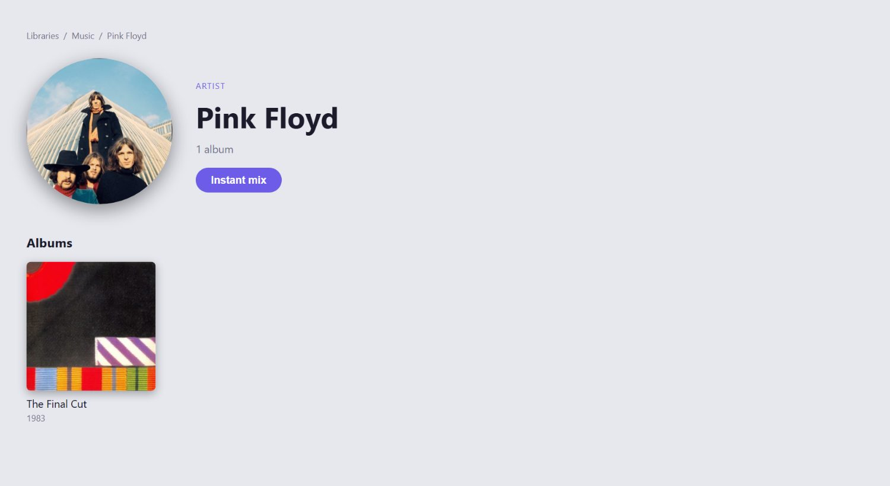
An artist page has these sections:
Instant mix NEW plays a mix of the artist and similar music on your server, replacing what's playing. It's also on album pages and in a track's details. The TV apps have Instant mix too, plus Play All and Shuffle on artist pages.
An album page shows the year, track count and length, with ▶ Play and Instant mix. Albums on more than one disc are split under Disc 1, Disc 2 and so on. Click a track number to play from that track.
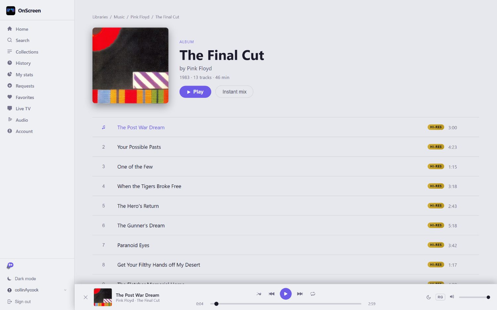
Music plays in a bar at the bottom of the web app, so you can keep browsing. From left to right:
On the phone and Android TV, music keeps playing after you leave the app, with controls on the lock screen and in the notification area (phone) or the system's media controls (TV).
Each track on an album page has a quality badge: Hi-Res (lossless, better than CD) or Lossless. Point at a track and click ⓘ (File details) to see:
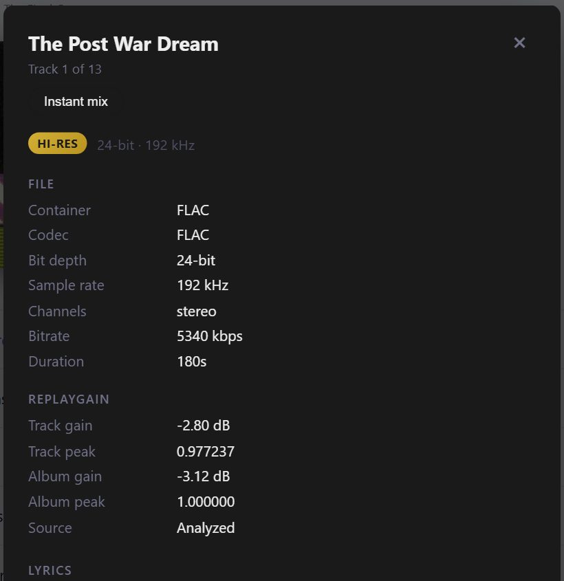
The phone app shows lyrics from a Lyrics button in the player.
ReplayGain evens out loudness so one track doesn't blast after a quiet one. It's off unless you turn it on, and it's set per browser or device.
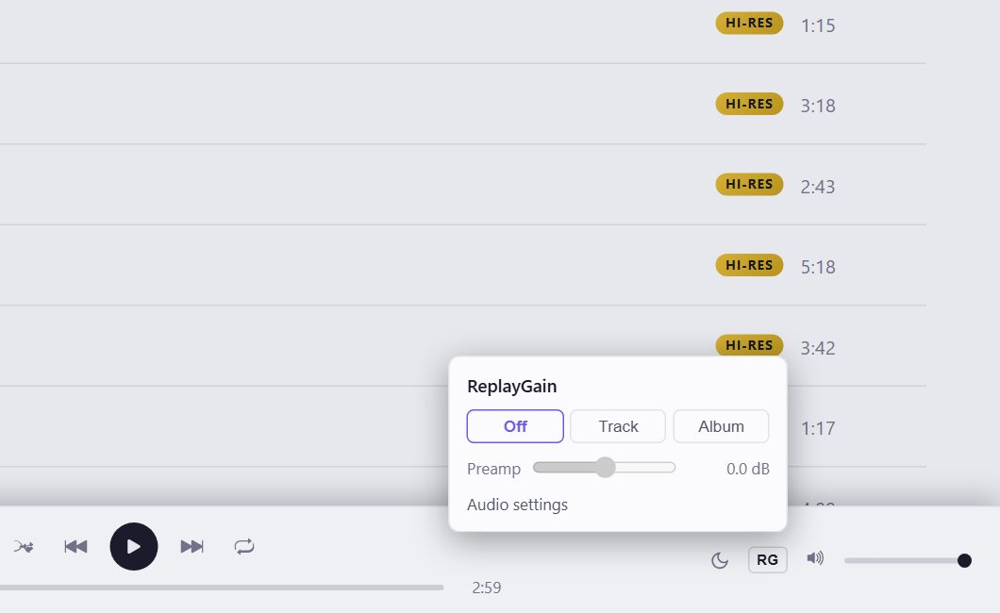
Tracks without ReplayGain tags play at their own level, unless your server has measured them (shown as Analyzed in the track's details). The phone app has the same choice in Settings ▸ ReplayGain.
Gapless playback: the web player loads the next track before the current one ends, so live albums and continuous mixes play without a gap. The phone plays queues gaplessly too.
The OnScreen desktop app adds a native audio engine for bit-perfect playback, with its options on the Audio page. The web music player always plays the original files.
Import and export live on the My Playlists page: click Playlists in the sidebar.
.m3u or .m3u8 file (up to 1 MB)
exported from another player.To export, open a playlist there and click Export .m3u8. Tick Full server paths if the other player needs the files' full paths on the server.
The My Playlists page also makes smart playlists (tick Smart playlist (rule-based)), which fill themselves from rules such as type, genre, year and rating.
Audiobook libraries are organised by author and series. A book's page shows its chapters and a play button:
Audiobooks play in the music player bar, which adds two buttons:
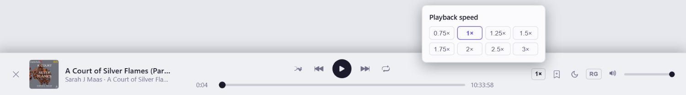
Bookmarks are listed on the book's page under Bookmarks. Click a bookmark's time to play from there, or use Add note / Edit note and Delete. The sleep timer can stop at the End of chapter.
Other apps: the phone has speed, bookmarks and a sleep timer. Android TV, Fire TV, LG, Samsung and Xbox have speed (on LG, Samsung and Xbox press ↓ during an audiobook). Roku plays audiobooks at normal speed only.
Podcast libraries list shows; open one to see its Episodes, newest first, with the date and length. Click an episode to play it. Your admin chooses which podcasts the server follows and how many episodes it keeps; new episodes download automatically. To suggest a podcast, ask your admin.
OnScreen reads EPUB books and CBZ and CBR comics in the web app and the phone app. Open a book to start reading.
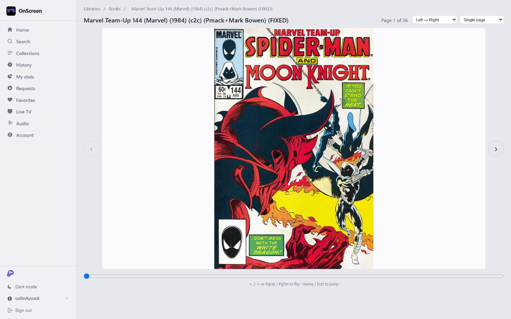
Your page is saved to the server as you read. If you've read further on another device, the web reader offers You're further along on … with Continue from page 40 on … or Stay here. This works for EPUB, CBZ and CBR in the web app; the phone app syncs comic pages (CBZ and CBR).
The TV apps don't read books ("Book reading isn't available on TV. Open this book in the web or phone app.").
E-reader apps that support OPDS catalogs, such as KOReader, Moon+ Reader, Panels, Chunky and Thorium, can browse, search and download your books.
osk_); it's shown only once./opds/.The catalog shows Recently added, one entry per book library you can open, and search. You see exactly the books you'd see in the web app.
Your account password doesn't work here, on purpose. If a device is lost, revoke its key in Account ▸ API keys. The catalog needs downloads to be allowed on the server; if they're not, the Account page says so.
A photo library opens as a grid sorted by Taken (newest first), which works as a timeline. You can also sort by Added or Title. Links at the top open the Map, Albums, People and Memories.
Camera RAW files NEW (CR2, CR3, NEF, ARW, DNG, RAF, ORF, RW2 and PEF) show like any other photo. When you shoot RAW + JPEG, the pair appears as one photo, and Download original gives you the RAW file.
Select lets you tick photos and Add to album….
| Key or button | Action |
|---|---|
| ← → or swipe | Previous / next photo |
| + -, wheel, pinch | Zoom in / out (double-click zooms to 2×); 0 resets. Drag to move around. |
| Space | Start or stop a slideshow (4 seconds a photo) |
| I | Info: when it was taken, camera, lens, exposure, size, location and people |
| F | Show the faces found in the photo |
| Esc | Stop the slideshow, close the info panel, then close the viewer |
The top bar also has Download original (when downloads are allowed), Add to album… and, inside an album, Remove from this album. The location in the info panel links to OpenStreetMap.
Albums are private: only you see yours. Open Albums (Photo albums) and click + New album, or add photos from the viewer or with Select. Each album's ⋯ menu has Rename and Delete; deleting an album leaves the photos in the library.
Photo map places photos that have GPS coordinates. Click a spot to see its photos in a side panel; zoom in to split busy spots. The phone app has a map too, under the library's Photo timeline / map button, with Timeline and Geotagged tabs.
If your admin has turned on face detection, OnScreen finds faces in your photos. It doesn't recognise who they are: you name them, and OnScreen gathers each person's photos.
Naming is available unless your account has viewing restrictions. If there are no faces yet, face detection may be off; ask your admin.
Memories shows photos taken on this day in earlier years (or this week, when a year has none that day). Each group has a Play button that starts a slideshow. The same memories appear as a row on Home.
On the TV apps, photos open in a viewer: ← → move between photos and OK starts a slideshow.
If your server has a TV tuner, the web app shows Live TV in the sidebar, and the LG, Samsung, Xbox and Android TV / Google TV apps show Live TV and Recordings. Fire TV, the phone and Roku don't have live TV.
On the LG, Samsung and Xbox apps, change channel with ▲ ▼ or CH ▲▼; Back returns to the channel list.
The Recordings page has tabs for Upcoming, Recording now, Completed and Rules. You can Cancel a recording that's scheduled or in progress. Statuses include Scheduled, Recording now, Done and Failed.
Click Watch on a completed recording to open it in the normal player. If the server has found the ad breaks NEW, a Skip Ad → button appears during each break; click it or press S. Turn on Always skip ads to skip them automatically in that browser.
Downloads let you keep a copy of a movie or episode to watch without a connection. They only appear when your admin allows downloads. Otherwise the button is hidden, or you'll see "Downloads are turned off on this server."
Account ▸ Downloads lists the smaller copies you've asked for, with their size and status: Waiting to start, Preparing · N%, Ready, Failed or Expired.
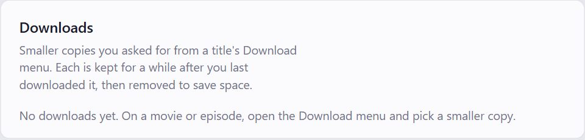
The phone app keeps downloads inside the app for watching offline.
Signing out of the phone app, or choosing Forget server, deletes every download on the phone.
The TV apps don't download.
Click Account in the sidebar. The page has these sections:
| Section | What it's for |
|---|---|
| My stats | A link to your statistics and Year in review (9.5). |
| Email me a digest | A weekly or monthly email of what's new (9.5). |
| Playback quality | Quality limits for all your devices (9.2). |
| Languages | Preferred audio and subtitle language (9.6). |
| Scrobbling | Link Last.fm, ListenBrainz or Trakt (9.6). |
| Password | Change your password (9.6). |
| Two-factor authentication | A code from an authenticator app at sign-in (9.6). |
| Signed-in devices | See and sign out your devices (9.3). |
| Downloads | Smaller copies you've asked for (8.2). |
| API keys | Keys for e-reader apps and home automation (9.4). |
| Your data | Download a copy of everything the server keeps about you (9.5). |
These limits apply to your account on every device, at home and away. Anything above them is converted by the server before it plays.
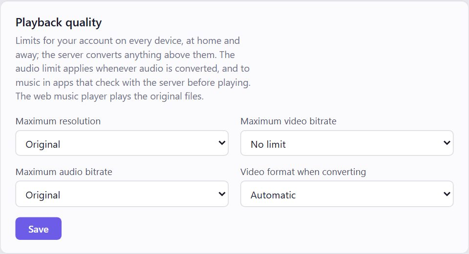
| Setting | Choices |
|---|---|
| Maximum resolution | Original, 4K, 1080p, 720p, 480p |
| Maximum video bitrate | No limit, 40, 20, 12, 8, 4, 2 or 1 Mbps |
| Maximum audio bitrate | Original, 320, 256, 192, 128 or 96 kbps |
| Video format when converting | Automatic, H.264 (plays everywhere), HEVC (smaller, where supported) |
Click Save. The same four settings are in the Android TV, Fire TV, phone, LG, Samsung and Xbox apps' Settings, and they all change the one setting on your account.
Lower the limits if you often watch over a slow connection or want to save mobile data. Leave them at Original / No limit for the best picture at home. The audio limit also applies to music in the apps that check with the server first; the web music player always plays the original files.
This lists the browsers and apps signed in to your account, with when each was last used. The one you're using is marked This device.
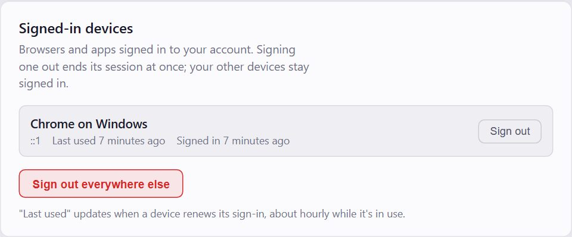
Lost a phone, or sold a TV? Sign it out here. If someone may know your password, change it too (9.6).
An API key lets an e-reader app, Home Assistant, Kometa or a script use OnScreen as you, without your password.
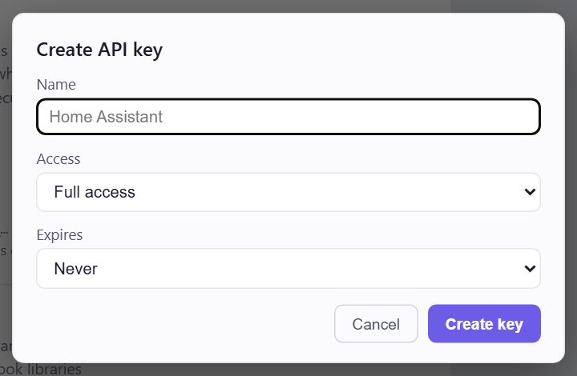
A key can do what you can, with your library access and limits, but it can never sign in, change your password or two-factor settings, or manage keys and devices. Revoke a key to stop it working at once. The section also shows your OPDS catalog address (5.4).
Choose Off, Weekly or Monthly for an email of what was added, what you're in the middle of and your numbers for the period. It needs an email address on your account and email set up on the server; the section tells you if either is missing.
My stats shows what you've watched, listened to and read. Only you can see it. Pick 30 days, 90 days, 12 months, All time or a year. You'll see hours watched and listened, plays, titles finished, books read and your longest streak, then activity by month, a chart of when you play, top genres, top movies, shows, artists and albums, and your devices. Plays show up a few minutes after they finish.
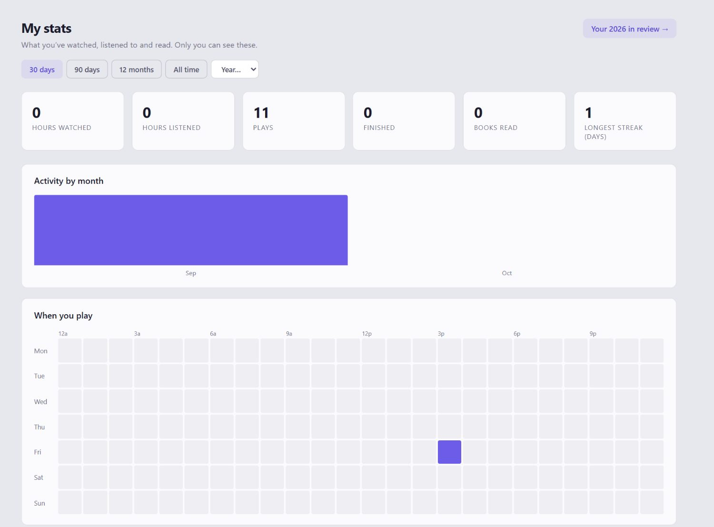
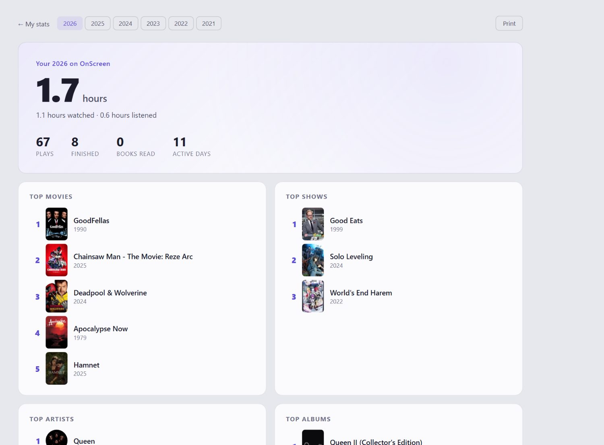
Your 2026 in review → opens a summary of the year: total hours, top titles, Where it started, highlights such as your busiest day and longest streak, and your year month by month. Print prints it.
Download my data saves a ZIP of what the server keeps about your account: profile and preferences, watch history and progress, ratings, favorites, playlists, reading positions, requests and signed-in devices. Passwords, two-factor secrets and keys are never included.
These are on the Account page too. Before v2.6 they were only in the admin's Settings.
Your other devices are signed out and need the new password; this browser stays signed in. After five wrong current passwords within 15 minutes, the form refuses further tries for a while. If you sign in through your organisation's sign-in (single sign-on) or LDAP, there's no OnScreen password to change and the section says so. Forgotten your password? Use Forgot password? on the sign-in page if your server sends email, or ask your admin.
To turn it off, enter a current code or a recovery code and click Disable 2FA. The phone app has the same setting (Settings ▸ Security). Two-factor sign-in protects password sign-in, so it isn't offered to accounts that use single sign-on or LDAP.
Choose a Preferred Audio Language and a Preferred Subtitle Language, then click Save Preferences. They're saved to your account, so every app uses them; the TV apps also have them in their own Settings. Use the series poster for episodes shows a show's poster instead of an episode still on Continue Watching, History and Search.
Click Link your accounts → under Scrobbling to send what you play to other services:
The phone, Android TV and Fire TV apps can link ListenBrainz too (Settings ▸ Scrobbling).
| Setting | Who changes it |
|---|---|
| Profile PINs, content-rating limit | Your admin. The TV apps show your rating limit as "Managed by the server administrator". |
| Display name, email | Your admin. |
| Deleting your account | Your admin. |
The web app follows your computer's light or dark setting. Click Dark mode / Light mode at the bottom of the sidebar to choose.
One app, in two editions. The Google TV / Android TV edition adds live TV and online subtitle search; the Fire TV edition leaves those out.
| Button | Action |
|---|---|
| ← / → | Back 10 s / forward 30 s (when the controls are hidden) |
| OK | Show the controls; then press the selected button |
| Play/Pause | Play / pause |
| Fast-forward / Rewind | Forward 30 s / back 10 s |
| Next | Next episode, track or chapter |
| Back | Close a Skip or Up Next card, or leave the player |
The player's buttons open Audio, Subtitles and Chapters (and Playback speed for audiobooks). Pick a version with Version: on the title page, and set quality in Settings ▸ Playback quality.
Surround sound (Dolby, DTS, TrueHD/Atmos), 4K and HDR are used automatically when your TV or receiver supports them. Music and audiobooks keep playing after you press Home. This app doesn't download or cast.
These three apps share the same screens. The top bar has Home, Libraries, Search, Favorites, History, and when your server offers them Discover (requests), Live TV and Recordings, then Settings.
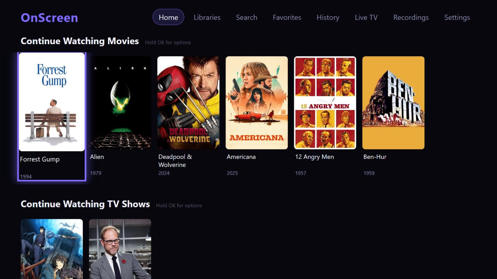
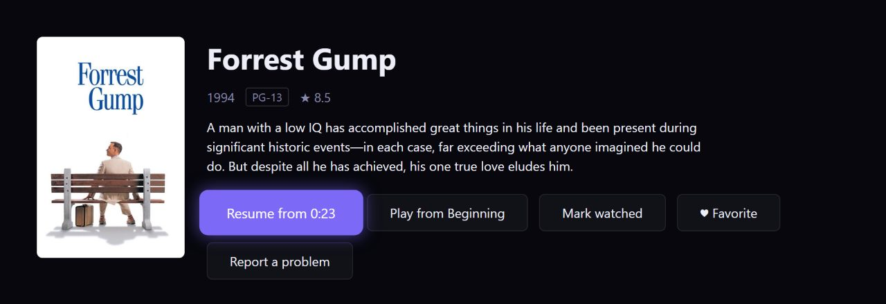
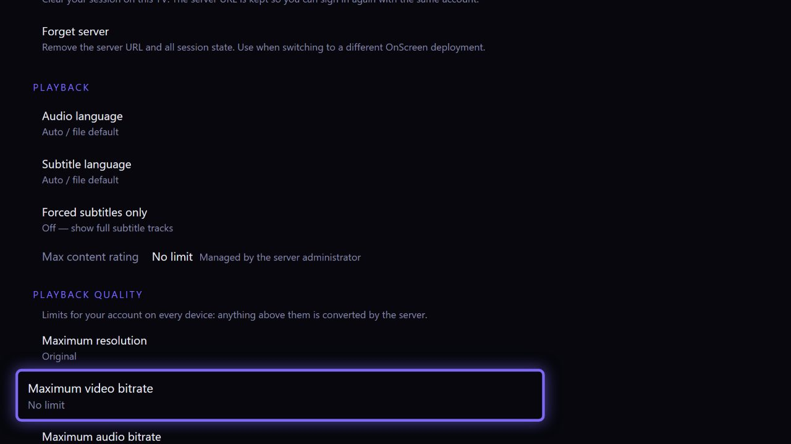
| Button | Action |
|---|---|
| OK or Play/Pause | Play / pause |
| ← / → | Back / forward 10 seconds (presses add up; the jump happens a moment after the last one) |
| Rewind / Fast-forward | Back / forward 30 seconds (previous / next track for music) |
| CH ▲▼ | Previous / next chapter, track or episode |
| Red / green | Previous / next chapter |
| Yellow / blue | Audio / subtitles menu |
| ↑ ↓ | Show the controls; ↓ again reaches Audio, Subtitles and Chapters |
| Stop | Pause |
| Back | Close a menu, cancel Up Next, dismiss Skip, or leave the player |
These apps have no quality menu in the player (use Settings ▸ Playback quality) and no book reader. There is no profile switcher; to change account, use Settings ▸ Sign out.
http:// or https://, then
sign in or choose Sign in with another device.Roku limits:
| Feature | Web | Android TV / Fire TV | Phone | LG / Samsung / Xbox | Roku |
|---|---|---|---|---|---|
| Pair with a code | (approves) | Yes | Yes | Yes | Yes |
| Profile switching | Yes | No | No | No | No |
| Playback quality setting | Account | Settings | Settings | Settings | No |
| Quality menu in player | Yes | No | No | No | No |
| Version picker | Player | Title page | Title page | Title page | Title page |
| Online subtitle search | Yes | Google TV only | Yes | Yes | No |
| Subtitle sync | Yes | No | No | No | No |
| Downloads | Yes | No | Yes, offline | No | No |
| Casting / Play on | Both | Receives | Chromecast | Receives | No |
| Book reader | Yes | No | Yes | No | No |
| Live TV | Yes | Google TV only | No | Yes | No |
| Requests | Yes | No | No | Discover | No |
In the web player, use the Sync row in the Subtitles menu (3.5). It only lasts for that viewing, so also send Report a problem ▸ Subtitles problem: an admin can save the right timing on the server for every app. Or try a different track, or Search online… for another one.
/pair page with the right account, and you typed all 6 digits.Your admin decides which libraries you can open, and may have a content-rating limit or label restrictions on your account. If you can make requests, search for the title and ask for it (2.9).
Downloads are off on your server. Ask your admin. The same setting controls the e-reader catalog and photo Download original.
Usually yes, up to your account's stream limit. Opening the same title on a second device takes over from the first.
From the web app in Chrome or Edge, or from the phone app, when the file can play directly on the Chromecast and is within your Playback quality limit (3.9). Otherwise use Play on… to send it to an OnScreen TV app.
Turn on ReplayGain (4.5). It's set separately in each browser and on the phone.
Your admin manages those.
On the Account page, under Password (9.6). If you've forgotten it, use Forgot password? on the sign-in page if it's there, or ask your admin.